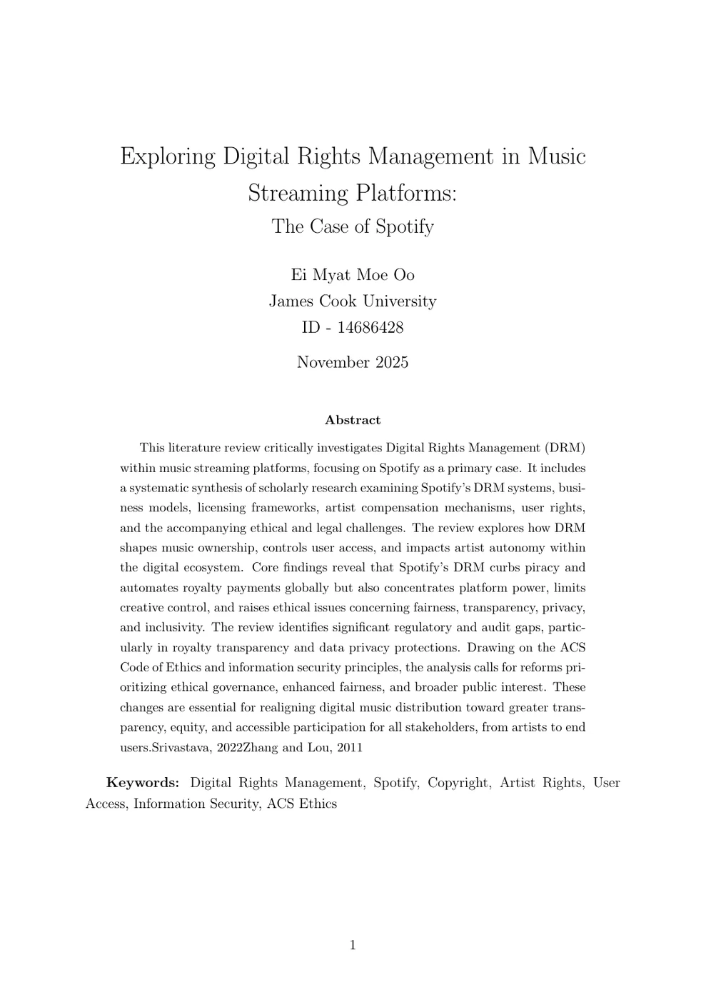

Information Security Research · Literature Review
Digital Rights Management in Music Streaming
The Case of Spotify
A critical review of how DRM protects digital music while influencing ownership, privacy, artist autonomy, platform control and ethical governance.
The research in four points.
Objective
Examine how Spotify’s DRM changes access, ownership and power among users, artists, rights holders and the platform.
Key Outcome
DRM supports licensed access and royalty tracking, but raises transparency, privacy, autonomy and governance concerns.
My Contribution
Conducted the literature search, screened sources, compared evidence, synthesised themes and wrote the final review.
Methods & Framework
Google Scholar screening, critical literature synthesis, information-security analysis and ACS ethical evaluation.
A verified research workflow.
- Project type
- Academic literature review
- Research topic
- Spotify DRM
- Initial search
- 48 articles
- Shortlisted
- 17 papers
- Final synthesis
- 8 key papers
- Deliverable
- 23-page research paper
Security controls with human consequences.
The review connected technical protection with the legal, commercial and ethical decisions surrounding digital music access.
Content Protection
Encryption, authentication and access controls protect licensed music distribution.
Ownership & Access
Streaming replaces ownership with revocable, permission-based listening access.
Copyright & Licensing
Technical controls reinforce contractual restrictions and global copyright frameworks.
Privacy
Playback monitoring creates questions about consent, transparency and secondary data use.
Artist Rights
Platform-controlled licensing and reporting affect autonomy, visibility and compensation.
Ethical Governance
The ACS principles frame fairness, public interest, honesty and professional responsibility.
From broad search to focused recommendations.
- 01
Define Context
Connected DRM with security, copyright and platform governance.
- 02
Search Literature
Identified 48 academic sources through Google Scholar.
- 03
Screen Evidence
Shortlisted 17 relevant papers and selected eight for analysis.
- 04
Compare Themes
Evaluated methods, arguments, evidence and limitations.
- 05
Synthesise Findings
Grouped insights across security, ownership, privacy and ethics.
- 06
Recommend Reform
Translated the synthesis into practical governance priorities.
Protection works, but trade-offs remain.
Licensed access and piracy control
DRM helps channel listeners toward protected streaming access and supports usage-based royalty tracking.
Impact: supports rights enforcement and digital distribution.Access replaces ownership
Subscriptions provide limited, revocable permission rather than transferable ownership of music files.
Impact: users remain dependent on accounts, devices and licences.Platform power is concentrated
Control of DRM infrastructure strengthens Spotify’s influence over access, distribution and commercial participation.
Response: clearer governance and wider stakeholder participation.Royalty systems remain difficult to audit
Automated tracking supports payment, while opaque calculations can weaken artist trust.
Response: transparent reporting and independent audits.Playback monitoring needs oversight
Usage data supports licensing and anti-fraud controls but also raises consent and behavioural-marketing concerns.
Response: data minimisation and clearer privacy controls.Independent artists face unequal power
Standardised contracts and platform dependence can limit negotiation, autonomy and visibility.
Response: equitable participation and accessible dispute mechanisms.Explore the academic detail.
The essential case-study story remains visible above; the extended evidence is available here and in the complete paper.
View Detailed Methodology
The review began with 48 Google Scholar results. Seventeen papers were shortlisted for relevance to legal, economic, ethical and structural DRM issues; eight were selected for focused comparison.
- Compared research focus, methods, arguments and limitations
- Organised evidence around access, licensing, security, artists, users and ethics
- Reviewed structure, citations and evidence-to-conclusion alignment
Explore Security and Technical Context
DRM combines encryption, authentication, licensing and access control to restrict playback to authorised users, devices, subscriptions and regions.
- Controls copying, transfer and unauthorised distribution
- Supports protected online and offline playback
- Introduces circumvention, implementation and governance risks
Read Extended Findings
- Copyright owners retain legal rights while platforms exercise practical control through infrastructure and contracts.
- Offline downloads remain encrypted and tied to subscription status.
- Low-connectivity users can be disproportionately affected by recurring verification requirements.
- International laws reinforce DRM protections while creating debate around fair use and research.
View Core References
The final synthesis used eight papers by Beekhuyzen; Matin; Rafi, Shepherd and Markantonakis; Scharf; Srivastava; Subramanya and Yi; Zhang and Lou; and Zhao, Qi and Ma. Full publication details appear in the research paper.
Priorities supported by the review.
Clarify royalties and contracts
Improve the visibility of calculations, contractual terms and data used in compensation.
Enable independent auditing
Review DRM-linked reporting and algorithms for accuracy, fairness and accountability.
Strengthen privacy protection
Use transparent, proportionate data practices with meaningful user control.
Expand access and fair use
Consider accessibility, education and users with limited connectivity in future DRM design.
Support creator participation
Include independent artists in governance and provide accessible complaint pathways.
Connecting technical protection with human impact.
What I learned
Information-security controls cannot be evaluated separately from ownership, privacy, fairness and platform governance.
What challenged me
The research required comparing legal, technical, creator and user perspectives without treating one viewpoint as complete.
What I would explore next
Future research could add artist and listener interviews, platform comparisons and newer privacy and transparency practices.

Read the complete 23-page literature review.
Open the full paper for the complete methodology, article analysis, technical discussion, ACS ethical evaluation, findings, recommendations and references.